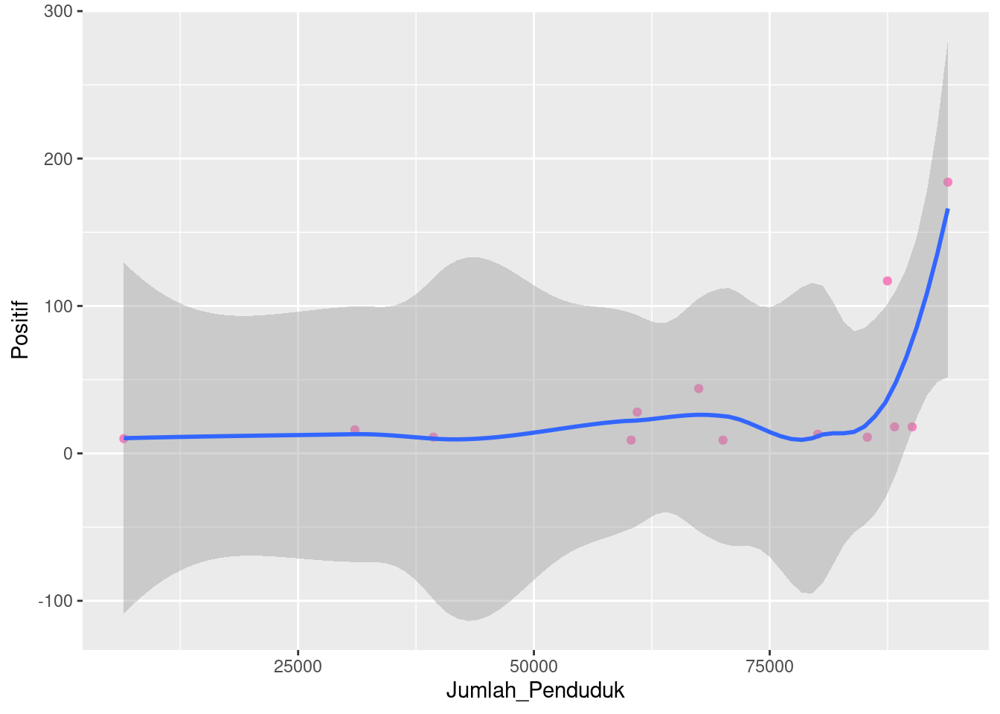

library(tidyverse)## ── Attaching packages ─────────────────────────────────────── tidyverse 1.3.0 ──## ✓ ggplot2 3.3.2 ✓ purrr 0.3.4
## ✓ tibble 3.0.4 ✓ dplyr 1.0.2
## ✓ tidyr 1.1.2 ✓ stringr 1.4.0
## ✓ readr 1.4.0 ✓ forcats 0.5.0## ── Conflicts ────────────────────────────────────────── tidyverse_conflicts() ──
## x dplyr::filter() masks stats::filter()
## x dplyr::lag() masks stats::lag()library(cluster)
library(factoextra)## Welcome! Want to learn more? See two factoextra-related books at https://goo.gl/ve3WBalibrary(gridExtra)##
## Attaching package: 'gridExtra'## The following object is masked from 'package:dplyr':
##
## combine#1 load data covid-19 di kab Pamekasan
data <- read.csv('data/pamekasan.csv')
view(data)#2 ambil data numerik
new_data <- data[,-1]
summary(new_data)## Positif Suspect
## Min. : 25.00 Min. : 7.00
## 1st Qu.: 45.00 1st Qu.: 8.00
## Median : 57.00 Median : 11.00
## Mean : 72.62 Mean : 27.85
## 3rd Qu.: 97.00 3rd Qu.: 20.00
## Max. :168.00 Max. :135.00#3 hitung jarak dari masing-masing data
distance <- get_dist(new_data)
distance## 1 2 3 4 5 6 7
## 2 75.802375
## 3 135.915415 95.462034
## 4 98.061205 72.622311 167.764716
## 5 104.048066 73.430239 32.140317 145.609066
## 6 116.901668 78.102497 19.313208 150.711645 14.560220
## 7 123.939501 89.022469 13.341664 161.644672 19.924859 11.180340
## 8 73.498299 58.309519 62.649820 125.801431 30.594117 44.045431 50.447993
## 9 126.846364 90.906545 10.440307 163.517583 22.803509 12.806248 3.000000
## 10 144.585615 104.004808 8.944272 176.139150 40.607881 28.231188 21.023796
## 11 115.247560 83.761566 22.203603 156.236999 11.661904 10.770330 9.000000
## 12 101.533246 76.059187 36.055513 147.665162 6.403124 20.124612 23.021729
## 13 146.536685 105.475116 10.770330 177.519013 42.579338 30.083218 23.021729
## 8 9 10 11 12
## 2
## 3
## 4
## 5
## 6
## 7
## 8
## 9 53.366656
## 10 71.196910 18.027756
## 11 41.761226 12.000000 30.016662
## 12 28.231188 26.019224 44.045431 14.035669
## 13 73.164199 20.024984 2.000000 32.015621 46.043458fviz_dist(distance, gradient=list(low="green",mid="white",high="red"))
#4 membuat klasterinf menjadi 2 kelompok
klaster <- kmeans(new_data, centers=2, nstart=25)
klaster## K-means clustering with 2 clusters of sizes 3, 10
##
## Cluster means:
## Positif Suspect
## 1 139.6667 84
## 2 52.5000 11
##
## Clustering vector:
## [1] 1 1 2 1 2 2 2 2 2 2 2 2 2
##
## Within cluster sum of squares by cluster:
## [1] 6878.667 4544.500
## (between_SS / total_SS = 72.3 %)
##
## Available components:
##
## [1] "cluster" "centers" "totss" "withinss" "tot.withinss"
## [6] "betweenss" "size" "iter" "ifault"#5 Membuat data frame untuk klaster
k = data.frame(klaster$cluster)
View(k)
k## klaster.cluster
## 1 1
## 2 1
## 3 2
## 4 1
## 5 2
## 6 2
## 7 2
## 8 2
## 9 2
## 10 2
## 11 2
## 12 2
## 13 2fviz_cluster(klaster, data = new_data)